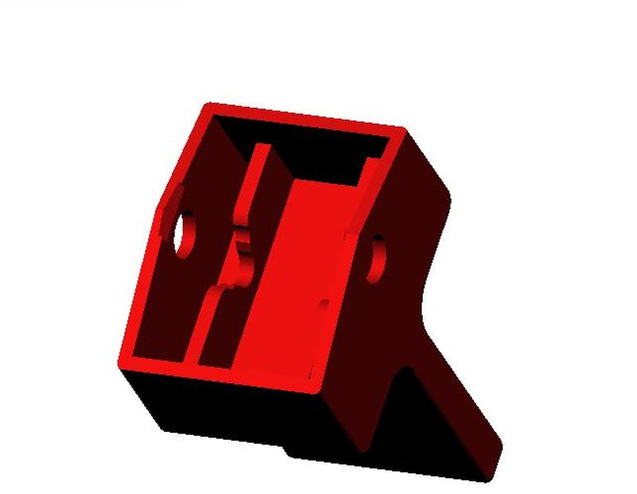
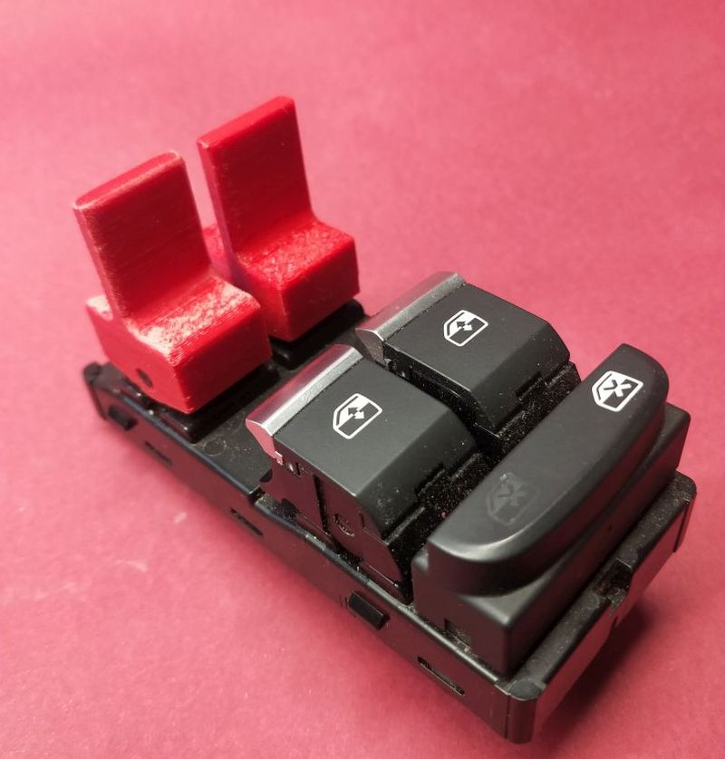

TG3D will actively support people who have an idea about or require a disability aid.
If you have an idea or would just like a chat, give us a call
Here are a couple of projects we have been involved in.
Aid for the hand challenged
|
The device allows people to open long-life cartons (Milk, Juice etc) The design is double sided as we have found 2 different manufacturers in Australia The user places the correct side on the carton and can then push down with their palm to open the carton. This device was featured at "Makers Making Change" and is available to download here |
Design study for a disabled mate  |
A friend has tetraplegia - no leg and limited arm function The problem addressed is this friend can push the power windows buttons down on his (adapted) Audi A4 but doesn't have the functionality to lift the front edge of the buttons and raise the windows These caps replace the power window switches. Note, they are snap on but the initial installation requires the switch block to be removed from the door however, if they are subsequently damaged, they should be able to be snapped back on. These caps are a direct replacement and if the car is to be returned stock, the original caps snap back |